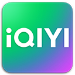

Kingcean
.net
Blogs
Trivial libraries
NuScien
< Back

iQIYI Windows App (UWP)
iQIYI is a video streaming platform with movies, TV series, shows, etc.
Its UWP app targets
.NET
and
Windows App SDK
.
iQIYI
- Microsoft Store page
iQIYI Preview
- Microsoft Store page
iQIYI.com
Screenshots
Captured on July 11
th
2022, version 8.0 RTM.